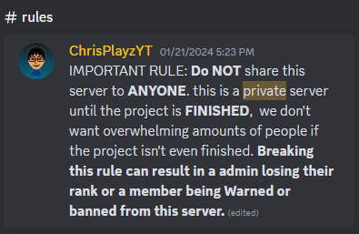
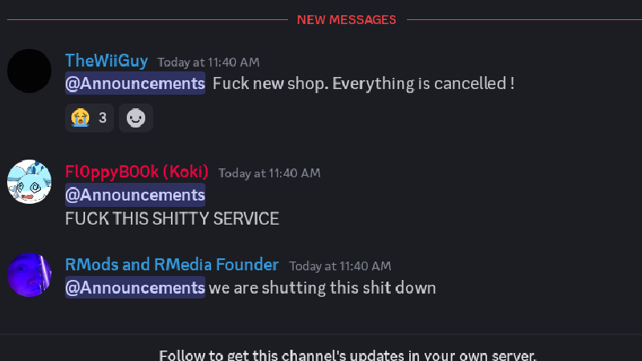
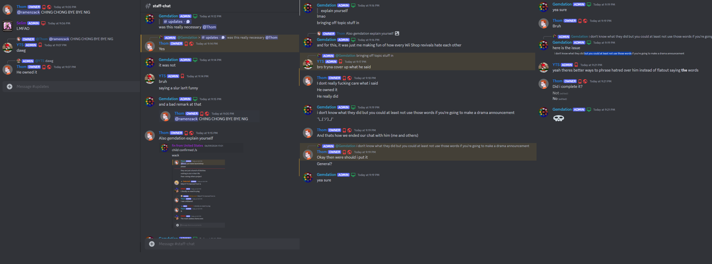
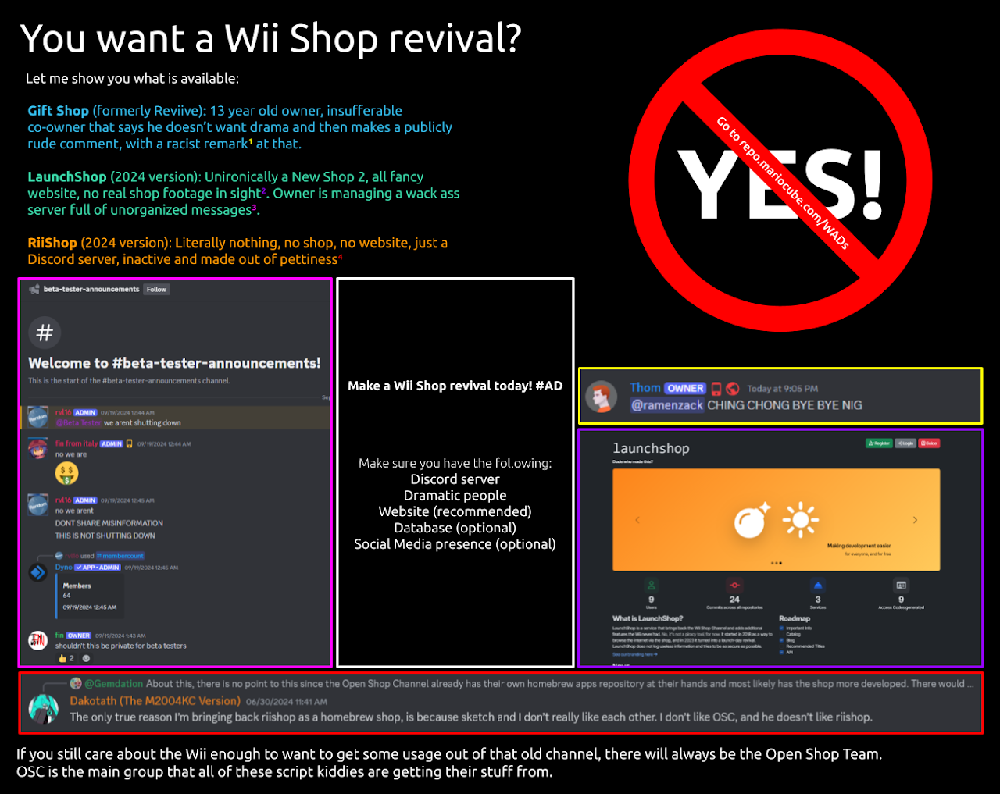
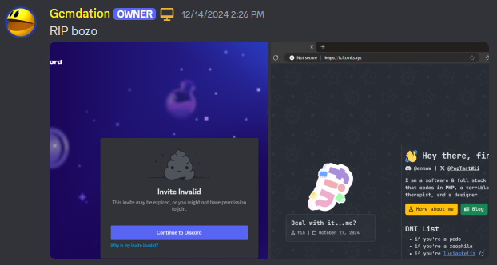

Wii Shop's Revenge
August 18, 2025
Greetings, the shop dummies of sorrow are here to revive the Wii Shop Channel of tomorrow. Be wary of the incompetent New or you'll get hacked by Launch in a few. Continue reading if this rings a bell, for I have an everlasting story to tell. Okay I am not in the mood to continue rhyming so I'll just continue normally. Be sure to read The Wii Shop Experience before this as that is a more in-the-moment blog.
This blog is mainly intended for outsiders who haven't experienced the hell that is Wii Shop revival Discord drama. If you're someone that was in one of these communities, you'll probably see some stuff missing that you've seen. Keep in mind that I joined Wii community Discords around December 2023.
LaunchShop
While I was not here for this, someone did give me a screenshot of it. Looks like it was in a private beta invite stage. Later on [somethings happened] and Rii Shop came to be. Keep in mind the creator's name, Fin, as you'll hear more about him soon.
RiiShop
One day I think I saw a video about it on YouTube while I was at school and joined their Discord server. I downloaded the WAD and chatted with some people. Tons of people knew about it, even SpawnWave made a video about RiiShop, which was probably the peak of the project. Below is likely the only screenshot I have of me being in it.
Shortly after, a leak happened and Larsenv [at the time] was the one at blame for it with WiiLink putting the project on blast for the Wii console serial number leak. Hundreds of people were complaining, and all the YouTube videos made about the project were suddenly outdated.
Amongst the crowd of the dead shop, there was another revival in the making. This will come back later on, you probably know what it is.
Reviive
The private, yet known Reviive Shop Channel was an in-progress revival made by Chrisplayz. He initially wanted the project to be private, he wasn't quite good at it along with the co-owner.
I was invited by JustWM who knew me from RiiShop. He was an admin there and invited me and somehow I ended up as mod, and later admin!
The owners weren't the best for a shop revival, I believe Chrisplayz only knew how to code on the frontend, while Thom worked on the backend in Python and was quite an irrationally angry fella. One extra admin, MattTheTekie, did get the shop working and made one of the only screenshot of it possible. To be honest, he was an okay developer but it was the decisions on the Discord side that made me leave.
Here is an example of how it looked:
- #📜|𝖗𝖚𝖑𝖊𝖘
- #📢|𝖆𝖓𝖓𝖔𝖚𝖓𝖈𝖊𝖒𝖊𝖓𝖙𝖘
- #🗨️|𝖌𝖊𝖓𝖊𝖗𝖆𝖑-𝖈𝖍𝖆𝖙
- #⚙️|𝖌𝖊𝖓𝖊𝖗𝖆𝖑-𝖉𝖊𝖛
- #🔑|𝖘𝖙𝖆𝖋𝖋-𝖈𝖍𝖆𝖙
I didn't like it, tried to convince MattTheTekie to switch to stuff that won't interfere with general channel typing and screen readers but he wasn't having it. I left because it irritated me how much he got to make changes without asking (and you'll see something similar later). But onto the beginning again, JustWM ended up talking trash about the project. That got him demoted and he wasn't too keen on that, of course which ended up getting him banned.
I should mention that the main owner was incompetent in running a Discord server, let alone an actual project. There was one time where I ran into Lucia, some angry fella because she was insisting on having her bot Rule34 on to a server full of probable minors. I ended up reporting this incident to him that led to nothing.
   